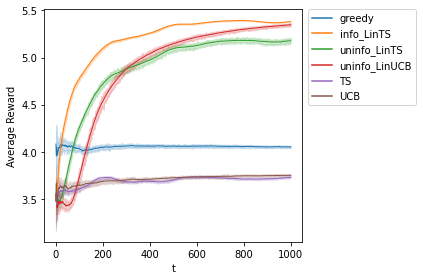

Specifying the Simulation Environments#
import os
os.getcwd()
os.chdir('D:/Github/CausalDM')
# import learner
from causaldm._util_causaldm import *
from scipy.linalg import block_diag
class Single_Gaussian_Env():
@autoargs()
def __init__(self, true_model, sigma, seed = 42, with_intercept = True, logged_dat = False):
self.setting = locals()
self.setting['self'] = None
self.seed = seed
np.random.seed(self.seed)
self.true_model = true_model
self.sigma = sigma
if logged_dat:
self.get_logged_dat()
def get_Phi(self):
""" consider the simple case now
[K, p]
"""
occup = np.random.multinomial(1, [1/5, 1/5, 1/5, 1/5, 1/5], size=1)
gender = np.random.binomial(1, 1/2, size=1)
age = np.random.randint(low=20, high=60, size = 1)
user_info = age.tolist()+gender.tolist()+occup.tolist()[0][:-1]
if self.with_intercept:
user_info = [1] + user_info
self.Phi = block_diag(*([np.array(user_info)] * 5))
return self.Phi
def get_reward(self, a):
self.r_mean = self.Phi.dot(self.true_model)
self.r = self.r_mean
return self.r[a] + abs(np.random.randn(1)[0])*self.sigma
def optimal_action_reward(self):
a = np.argmax(self.r)
return a
def get_logged_dat(self):
true_model = self.true_model.reshape((5,-1))
occup = np.random.multinomial(1, [2/5, 3/5, 0, 0, 0], size=100)
gender = np.random.binomial(1, 1/20, size=100).reshape(-1,1)
age = np.random.randint(low=20, high=25, size = 100).reshape(-1,1)
rec_genre = np.random.randint(low=0, high=5, size = 100).reshape(-1,1)
user_info = pd.DataFrame(np.concatenate((age, gender, occup, rec_genre), axis=1))
user_info.columns = ['age', 'gender', 'educator', 'student', 'executive', 'technician', 'others','rec_genre']
user_info['reward'] = user_info.apply(lambda row : np.dot(true_model[row['rec_genre']],
np.array([1]+row.iloc[:-2].tolist()))+
self.sigma*abs(np.random.randn(1)[0]), axis = 1)
self.user_info = user_info
---------------------------------------------------------------------------
FileNotFoundError Traceback (most recent call last)
/var/folders/9j/vb5nb4rd5bx0gr1q5ytx9q600000gn/T/ipykernel_64808/2393233947.py in <module>
1 import os
2 os.getcwd()
----> 3 os.chdir('D:/Github/CausalDM')
4 # import learner
5 from causaldm._util_causaldm import *
FileNotFoundError: [Errno 2] No such file or directory: 'D:/Github/CausalDM'
True Model#
true_model = np.array([ 1. , 0.01, -0.5 , 3.3 , -0.8 , -0.5 , 4 ,
1.5 , 0.03, -0.6 , 1.4 , 3.3 , -1 , -0.8 ,
1.3 , 0.015, 1.5 , -1.2 , 2.6 , 1.5 , -1 ,
1.8 , -0.03, 2.1 , -1.3 , 2.5 , 3.5, 1.3 ,
1.9 , -0.02, 1.2 , 1.5 , -1.1 , 2 , -.6 ])
sigma = 1
true_model_1 = pd.DataFrame(true_model.reshape((5,-1)))
true_model_1.index = ['comedy', 'drama','action','thriller','scifi']
true_model_1.columns = ['inercept', 'age', 'gender', 'educator', 'student', 'executive', 'technician']
print(true_model_1.to_markdown())
| | inercept | age | gender | educator | student | executive | technician |
|:---------|-----------:|-------:|---------:|-----------:|----------:|------------:|-------------:|
| comedy | 1 | 0.01 | -0.5 | 3.3 | -0.8 | -0.5 | 4 |
| drama | 1.5 | 0.03 | -0.6 | 1.4 | 3.3 | -1 | -0.8 |
| action | 1.3 | 0.015 | 1.5 | -1.2 | 2.6 | 1.5 | -1 |
| thriller | 1.8 | -0.03 | 2.1 | -1.3 | 2.5 | 3.5 | 1.3 |
| scifi | 1.9 | -0.02 | 1.2 | 1.5 | -1.1 | 2 | -0.6 |
Offline Policy Optimization#
from causaldm.learners.CPL13.disc import QLearning
seed = 0
user_info = Single_Gaussian_Env(true_model, sigma, seed = seed, with_intercept = True, logged_dat = True)
user_info = user_info.user_info
S = user_info[['age', 'gender', 'educator', 'student', 'executive', 'technician']]
A = user_info['rec_genre']
R = user_info['reward']
r_mean = block_diag(*([np.array([1,40,.5,1,0,0,0])] * 5)).dot(true_model).tolist()+ block_diag(
*([np.array([1,40,.5,0,1,0,0])] * 5)).dot(true_model).tolist()+ block_diag(
*([np.array([1,40,.5,0,0,1,0])] * 5)).dot(true_model).tolist()+ block_diag(
*([np.array([1,40,.5,0,0,0,1])] * 5)).dot(true_model).tolist()+ block_diag(
*([np.array([1,40,.5,0,0,0,0])] * 5)).dot(true_model).tolist()
r_mean = np.array(r_mean).reshape((5,-1))
r_mean.T
array([[4.45, 0.35, 0.65, 5.15, 1.15],
[3.8 , 5.7 , 1.4 , 1.6 , 2.4 ],
[1.45, 5.25, 4.15, 1.65, 2.65],
[0.35, 4.15, 5.15, 2.95, 1.65],
[3.2 , 0.6 , 3.7 , 1.1 , 1.7 ]])
model_info = [{"model": "reward~C(rec_genre)*(age+gender+educator+student+executive+technician)", #default is add an intercept!!!
'action_space':{'rec_genre':[0,1,2,3,4]}}]
#2. initialize the learner
QLearn = QLearning.QLearning()
#3. train the policy
QLearn.train(S, A, R, model_info, T=1)
#4. recommend action
opt_d = QLearn.recommend_action(S).value_counts()
#5. get the estimated value of the optimal regime
V_hat = QLearn.predict_value(S)
print("fitted model:",QLearn.fitted_model[0].params)
print("opt regime:",opt_d)
print("opt value:",V_hat)
fitted model: Intercept 1.338373e+00
C(rec_genre)[T.1] 2.553173e+00
C(rec_genre)[T.2] 1.916054e+00
C(rec_genre)[T.3] 2.419341e-01
C(rec_genre)[T.4] -4.574240e-01
age 5.646757e-02
C(rec_genre)[T.1]:age -7.578371e-02
C(rec_genre)[T.2]:age -1.303934e-01
C(rec_genre)[T.3]:age -4.339018e-02
C(rec_genre)[T.4]:age -6.560132e-03
gender 3.625256e-01
C(rec_genre)[T.1]:gender 3.893010e-16
C(rec_genre)[T.2]:gender 2.984154e-16
C(rec_genre)[T.3]:gender 3.818640e-16
C(rec_genre)[T.4]:gender 5.184398e-01
educator 2.816416e+00
C(rec_genre)[T.1]:educator -1.784788e+00
C(rec_genre)[T.2]:educator -3.145633e+00
C(rec_genre)[T.3]:educator -4.053477e+00
C(rec_genre)[T.4]:educator -9.396107e-01
student -1.478043e+00
C(rec_genre)[T.1]:student 4.337961e+00
C(rec_genre)[T.2]:student 5.061687e+00
C(rec_genre)[T.3]:student 4.295411e+00
C(rec_genre)[T.4]:student 4.821867e-01
executive 0.000000e+00
C(rec_genre)[T.1]:executive 0.000000e+00
C(rec_genre)[T.2]:executive 0.000000e+00
C(rec_genre)[T.3]:executive 0.000000e+00
C(rec_genre)[T.4]:executive 0.000000e+00
technician 0.000000e+00
C(rec_genre)[T.1]:technician 0.000000e+00
C(rec_genre)[T.2]:technician 0.000000e+00
C(rec_genre)[T.3]:technician 0.000000e+00
C(rec_genre)[T.4]:technician 0.000000e+00
dtype: float64
opt regime: rec_genre
1 65
0 35
dtype: int64
opt value: 6.0039255479596445
fitted_model = np.array(QLearn.fitted_model[0].params).reshape((7,-1)).T
fitted_model[1:,:] += fitted_model[0,:]
fitted_model = pd.DataFrame(fitted_model)
fitted_model.index = ['comedy', 'drama','action','thriller','scifi']
fitted_model.columns = ['inercept', 'age', 'gender', 'educator', 'student', 'executive', 'technician']
print(fitted_model.to_markdown())
| | inercept | age | gender | educator | student | executive | technician |
|:---------|-----------:|-----------:|---------:|-----------:|----------:|------------:|-------------:|
| comedy | 1.33837 | 0.0564676 | 0.362526 | 2.81642 | -1.47804 | 0 | 0 |
| drama | 3.89155 | -0.0193161 | 0.362526 | 1.03163 | 2.85992 | 0 | 0 |
| action | 3.25443 | -0.0739259 | 0.362526 | -0.329217 | 3.58364 | 0 | 0 |
| thriller | 1.58031 | 0.0130774 | 0.362526 | -1.23706 | 2.81737 | 0 | 0 |
| scifi | 0.880949 | 0.0499074 | 0.880965 | 1.87681 | -0.995856 | 0 | 0 |
Online MAB#
T = 1000
S = 100
p = len(true_model)
K = 5
sigma = 1
estimated_gamma = np.array(fitted_model).reshape(-1)
alpha = .1
exploration_T = K
Reward_Type = "Gaussian"
u_prior_mean = np.zeros(K)
u_prior_cov = 1000*np.identity(K)
#LINTS-informative
from causaldm.learners.CPL4.CMAB import LinTS, LinUCB
from causaldm.learners.CPL4.MAB import TS, UCB
sigma1 = 3
cum_reward_greedy = []
cum_reward_infoLinTS = []
cum_reward_uninfoLinTS = []
cum_reward_uninfoLinUCB = []
cum_reward_TS = []
cum_reward_UCB = []
for seed in range(S):
##Greedy
env = Single_Gaussian_Env(true_model, sigma, seed = seed, with_intercept = True, logged_dat = False)
cum_reward_greedy_t = []
for t in range(T):
X = env.get_Phi()
A = np.argmax(X.dot(estimated_gamma))
R = env.get_reward(A)
cum_reward_greedy_t.append(R)
cum_reward_greedy_t = np.cumsum(cum_reward_greedy_t)/(np.array(range(T))+1)
cum_reward_greedy.append(cum_reward_greedy_t)
##info_LINTS
env = Single_Gaussian_Env(true_model, sigma, seed = seed, with_intercept = True, logged_dat = False)
prior_theta_u = np.array(estimated_gamma)
prior_theta_cov = sigma1*np.identity(p)
info_LinTS= LinTS.LinTS_Gaussian(sigma = sigma, prior_theta_u = prior_theta_u,
prior_theta_cov = prior_theta_cov,
K = K, p = p,seed = seed)
cum_reward_infoLinTS_t = []
for t in range(T):
X = env.get_Phi()
A = info_LinTS.take_action(X)
R = env.get_reward(A)
info_LinTS.receive_reward(t,A,R,X)
cum_reward_infoLinTS_t.append(R)
cum_reward_infoLinTS_t = np.cumsum(cum_reward_infoLinTS_t)/(np.array(range(T))+1)
cum_reward_infoLinTS.append(cum_reward_infoLinTS_t)
##uninfo_LINTS
env = Single_Gaussian_Env(true_model, sigma, seed = seed, with_intercept = True, logged_dat = False)
prior_theta_u = 100*np.ones(p)
prior_theta_cov = 200*np.identity(p)
uninfo_LinTS= LinTS.LinTS_Gaussian(sigma = sigma, prior_theta_u = prior_theta_u,
prior_theta_cov = prior_theta_cov,
K = K, p = p,seed = seed)
cum_reward_uninfoLinTS_t = []
for t in range(T):
X = env.get_Phi()
A = uninfo_LinTS.take_action(X)
R = env.get_reward(A)
uninfo_LinTS.receive_reward(t,A,R,X)
cum_reward_uninfoLinTS_t.append(R)
cum_reward_uninfoLinTS_t = np.cumsum(cum_reward_uninfoLinTS_t)/(np.array(range(T))+1)
cum_reward_uninfoLinTS.append(cum_reward_uninfoLinTS_t)
##uninfo_LINUCB
env = Single_Gaussian_Env(true_model, sigma, seed = seed, with_intercept = True, logged_dat = False)
uninfo_LinUCB= LinUCB.LinUCB_Gaussian(alpha = alpha, K = K, p = p, seed = seed,
exploration_T = exploration_T)
cum_reward_uninfoLinUCB_t = []
for t in range(T):
X = env.get_Phi()
A = uninfo_LinUCB.take_action(X)
R = env.get_reward(A)
uninfo_LinUCB.receive_reward(t,A,R,X)
cum_reward_uninfoLinUCB_t.append(R)
cum_reward_uninfoLinUCB_t = np.cumsum(cum_reward_uninfoLinUCB_t)/(np.array(range(T))+1)
cum_reward_uninfoLinUCB.append(cum_reward_uninfoLinUCB_t)
##TS
env = Single_Gaussian_Env(true_model, sigma, seed = seed, with_intercept = True, logged_dat = False)
uninfo_TS= TS.TS(Reward_Type = Reward_Type, sigma = sigma,
u_prior_mean = u_prior_mean, u_prior_cov = u_prior_cov,
seed = seed)
cum_reward_TS_t = []
for t in range(T):
X = env.get_Phi()
A = uninfo_TS.take_action()
R = env.get_reward(A)
uninfo_TS.receive_reward(t,A,R)
cum_reward_TS_t.append(R)
cum_reward_TS_t = np.cumsum(cum_reward_TS_t)/(np.array(range(T))+1)
cum_reward_TS.append(cum_reward_TS_t)
##UCB
env = Single_Gaussian_Env(true_model, sigma, seed = seed, with_intercept = True, logged_dat = False)
uninfo_UCB= UCB.UCB1(K)
cum_reward_UCB_t = []
for t in range(T):
X = env.get_Phi()
A = uninfo_UCB.take_action()
R = env.get_reward(A)
uninfo_UCB.receive_reward(t,A,R)
cum_reward_UCB_t.append(R)
cum_reward_UCB_t = np.cumsum(cum_reward_UCB_t)/(np.array(range(T))+1)
cum_reward_UCB.append(cum_reward_UCB_t)
import seaborn as sns
result = pd.DataFrame({'rep':np.concatenate([np.ones(T)*rep for rep in range(S)]*6),
't':np.concatenate([range(T)]*6*S),
'Reward':np.concatenate(cum_reward_greedy+
cum_reward_infoLinTS+
cum_reward_uninfoLinTS+
cum_reward_uninfoLinUCB+
cum_reward_TS+
cum_reward_UCB),
'Algo':['greedy']*T*S+['info_LinTS']*T*S+['uninfo_LinTS']*T*S+['uninfo_LinUCB']*T*S+['TS']*T*S+['UCB']*T*S})
sns.lineplot(data=result[result.t>0], x='t', y="Reward", hue="Algo", ci = 95,
n_boot = 20, linewidth = 1.0, markers = False)
plt.legend(bbox_to_anchor=(1.02, 1), loc='upper left', borderaxespad=0)
plt.ylabel('Average Reward')
plt.tight_layout()
plt.savefig('MovieLens_Contextual.png')

plt.tight_layout()
<Figure size 432x288 with 0 Axes>